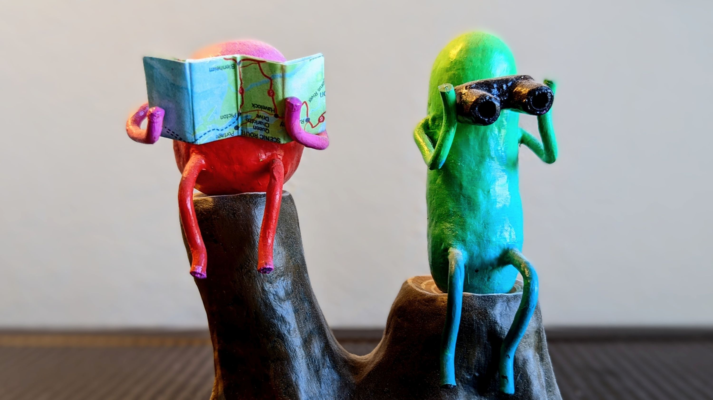

Writings
Sculpture credit: "Kindred Spirits" by Bayu Angermeyer
About the Work
While essays, lectures, and arguments about sensitive topics tend to force us ever deeper into our existing points of view, I've always felt stories have the power to do the opposite. Once we are drawn into a set of characters and their challenges we begin to have real empathy for them, reaching a place of softness from which it becomes possible to learn about an alternative view, shift our own perspectives, or even change our minds. With these stories, poems, and essays, I'm hoping to bring my readers new perspectives on gender, sexuality, relationships, and social justice.
Stories
- The Lives of the Animals - a story about navigating our needs for physical affection, selected for inclusion in the 2025 Seattle Erotic Arts Festival
- Patterns - a loving mother's relentless support for her trans daughter (password available on request).
- What If - a story about the unexpected benefits of anxiety, from the Jack Straw Writers Anthology 2023.
- Petrichor* - imagining the dynamics of attraction when it is based primarily on scent (password available on request).
- Through the Walls* - a tale of unexpected pandemic romance, selected for inclusion in the 2022 Seattle Erotic Arts Festival
- The Mermaid of Shi Shi Beach - a (very) short story inspired by Lori Evans' painting by the same name at the 2022 Seattle Erotic Arts Festival.
content warning: Some of these stories (marked with a *) contain graphic descriptions of intimate situations; please proceed with caution if you are sensitive to such material.
Poems
- Bus Stop, selected for 4Culture's Poetry in Public: Places of Landing project
About the Author
See Sumu Tasib's bio to learn more about the author and how to contact them.